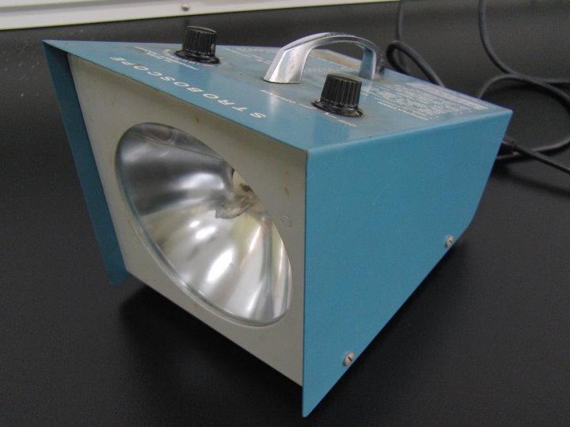
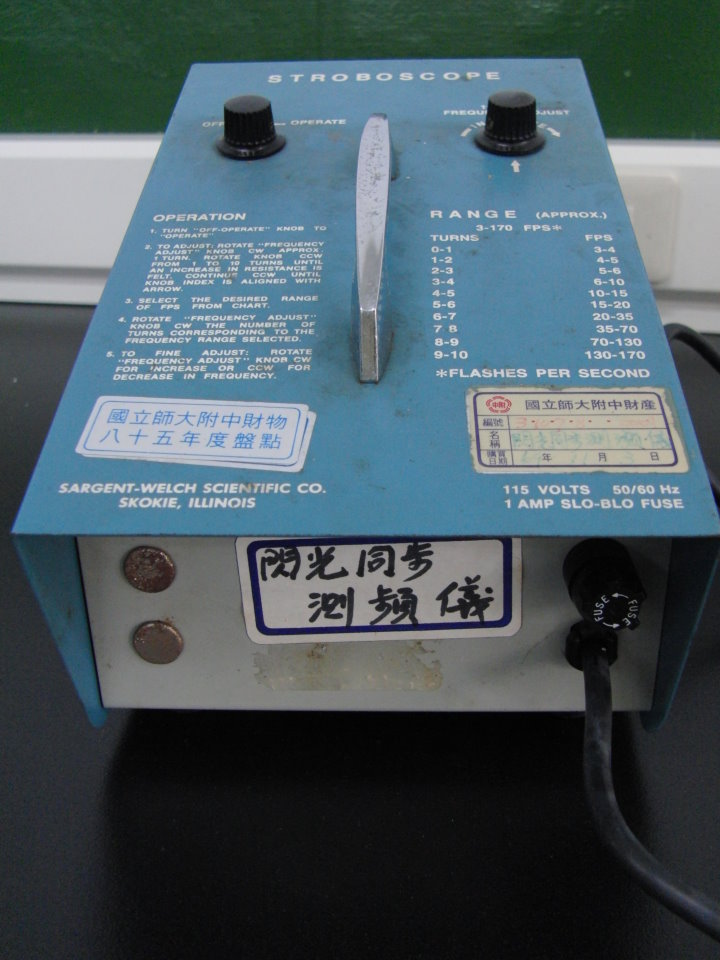
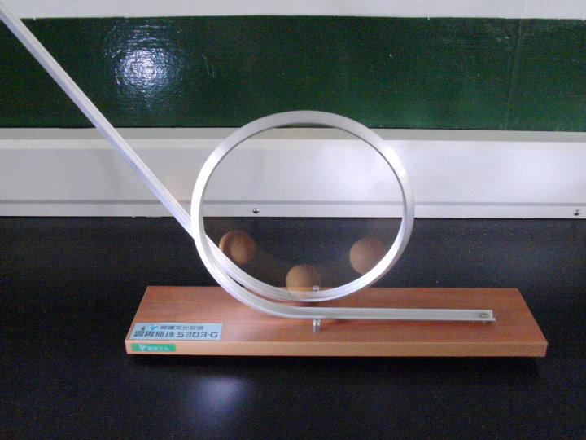
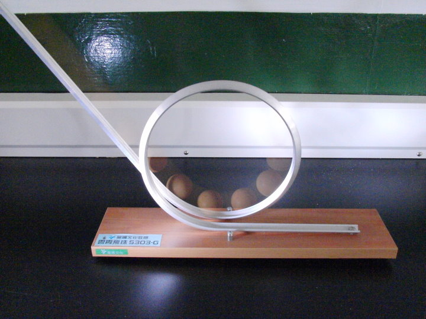
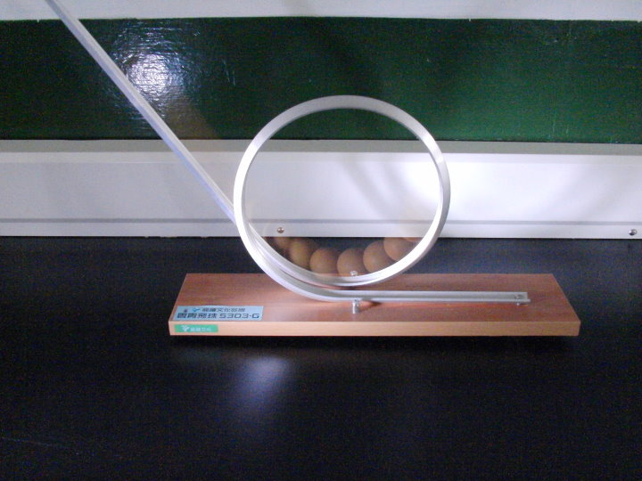
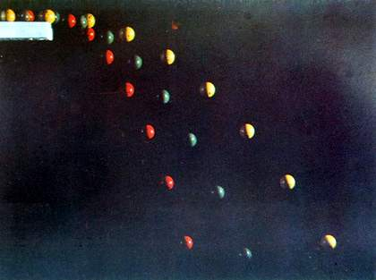
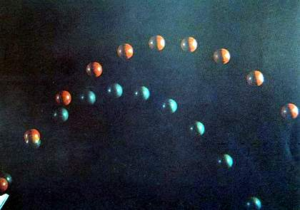
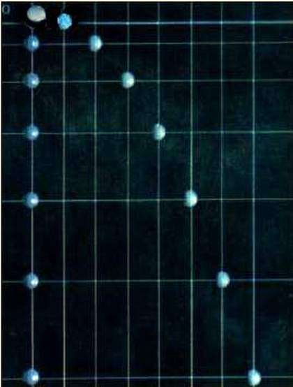
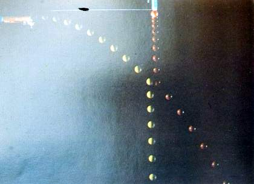
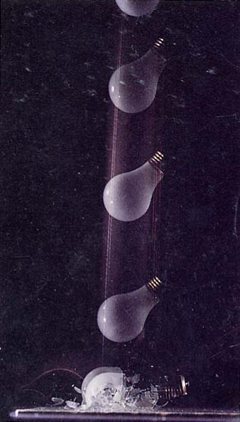

↑在實驗室裡找到一個古老的寶物 ─ 閃頻計時器。

↑顧名思義，是用來測量快速轉動或震動物體的頻率。當閃光頻率與待測物頻率相同時，
待測物看起來會像靜止不動一般。
上面有兩個旋鈕，左邊是開關，右邊調頻率，已經有點接觸不良了。
↑使用時，燈光快速閃爍，因為比攝影機快門還快，所以看不出來(但是聽得出來喔)。
↑用高速攝影機來拍，就能清楚看到快速閃光的情形了。
↑用閃頻計時器當閃光燈，再將另一台相機開長時間曝光，這是拍攝實況。

↑這是拍攝結果，可以將小球在不同位置的影像，重疊在同一畫面上。

↑這張照片與上面的運動完全相同，只是提高閃光的頻率，所以球的間距更接近了。

↑再提高閃光頻率，球的影像幾乎要重疊了。
↑用高速攝影機拍攝完全相同的運動，實在是太清楚了。難怪高速攝影機發明後，閃頻計時器就變古董了。
感謝 師大物理系 黃福坤 教授提供可以高速錄影的相機： CASIO EX-F1
以下是在網路上找到類似的照片：




↑以上四張照片來自：http://218.104.75.69/tbfd/gzpds/tbfd/g1wl/g1wl08/tp.htm
↑以上照片來自：http://140.128.56.9/~rocket/force/force_4_explain.htm

↑以上照片來自：http://www.jydoc.com/view-302793.html